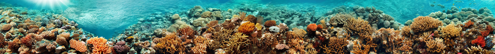

Compositional Diffusion with Guided Search
for Long-Horizon Planning
Abstract
Generative models have emerged as powerful tools for planning, with compositional approaches offering particular promise for modeling long-horizon task distributions by composing together local, modular generative models. This compositional paradigm spans diverse domains, from multi-step manipulation planning to panoramic image synthesis to long video generation. However, compositional generative models face a critical challenge: when local distributions are multimodal, existing composition methods average incompatible modes, producing plans that are neither locally feasible nor globally coherent. We propose Compositional Diffusion with Guided Search (CDGS), which addresses this mode averaging problem by embedding search directly within the diffusion denoising process. Our method explores diverse combinations of local modes through population-based sampling, enforces global consistency through iterative resampling between overlapping segments, and prunes infeasible candidates using likelihood-based filtering. CDGS matches oracle performance on seven robot manipulation tasks, outperforming baselines that lack compositionality or require long-horizon training data. The approach generalizes across domains, enabling coherent text-guided panoramic images and long videos through effective local-to-global message passing.
Method
CDGS is a structured inference-time algorithm designed to identify coherent sequences of local modes that form valid global plans. Specifically, CDGS employs a population-based search to explore and select promising mode sequences beyond naive sampling. To facilitate the search, it:
- Incorporates iterative resampling into the compositional score calculation to enhance information exchange across distant segments, leading to potentially coherent global plan candidates.
- Prunes the incoherent candidates by evaluating the likelihood of their local segments with a ranking objective.
Note that this is all within a standard denoising diffusion process, making CDGS a plug-and-play sampler applicable across domains, including robotics planning, panorama image generation, and long video generation.

Results
We evaluate our approach across three key domains that demonstrate the versatility and effectiveness of our method.
Long-horizon manipulation tasks
Complex robotic manipulation sequences requiring long-horizon planning and reasoning about inter-step dependencies.
|
Video 1: On the table, there's a hook, a blue cube, and a green cube. The hook and green cube are within reach, but the blue cube is out of reach. The goal is to move the blue cube into the spot where the green cube currently sits. One way to do this is to first pick up the hook and use it to pull the blue cube closer, then move the green cube out of the way, and finally place the blue cube in the green cube's original spot. Alternatively, you could first move the green cube, then pull the blue cube closer, and finally place it. We leave it to the algorithm to determine the exact sequence of actions. |
Video 2: On the table, there's a hook, a cube, and a rack. The hook is within reach, but the cube and rack are out of reach. The goal is to get the cube placed underneath the rack. To do this, you first pick up the hook and pull the cube closer. Then you put down the hook, pick up the cube, and place it in front of the rack. Finally, you grab the hook again and push the cube under the rack. |
Panoramic image generation
High-resolution panoramic image synthesis up to 512 × 4608 with seamless stitching and detail preservation. Select a prompt below to view the generated panorama.

"A photo of a beautiful ocean with coral reef"
Long video generation
Extended video sequence generation up to 350 frames while maintaining temporal and subject consistencies. Select a prompt below to view the generated video.
"A cute happy panda, dressed in a small, red jacket and a tiny hat, sits on a wooden stool in a serene bamboo forest. The panda's fluffy paws strum a miniature acoustic guitar, producing soft, melodic tunes, move hands, singings. Nearby, a few other pandas gather, watching curiously and some clapping in rhythm. Sunlight filters through the tall bamboo, casting a gentle glow on the scene. The panda's face is expressive, showing concentration and joy as it plays. The background includes a small, flowing stream and vibrant green foliage, enhancing the peaceful and magical atmosphere of this unique musical performance. realism, lifelike."
Citation
If you find this work useful, please cite:
@inproceedings{
mishra2026compositional,
title={Compositional Diffusion with Guided search for Long-Horizon Planning},
author={Utkarsh Aashu Mishra and David He and Yongxin Chen and Danfei Xu},
booktitle={The Fourteenth International Conference on Learning Representations},
year={2026},
url={https://openreview.net/forum?id=b8avf4F2hn}
}